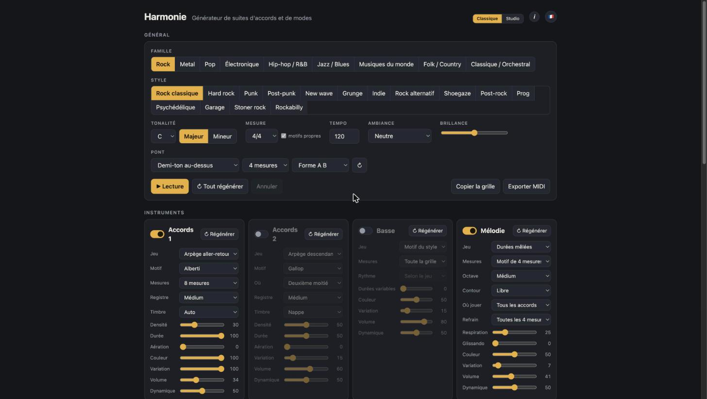
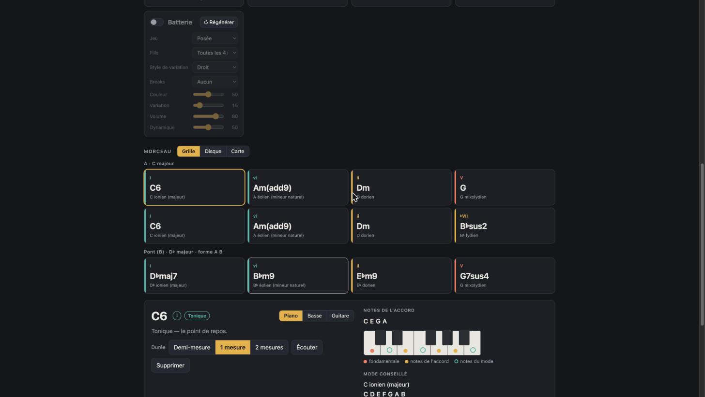
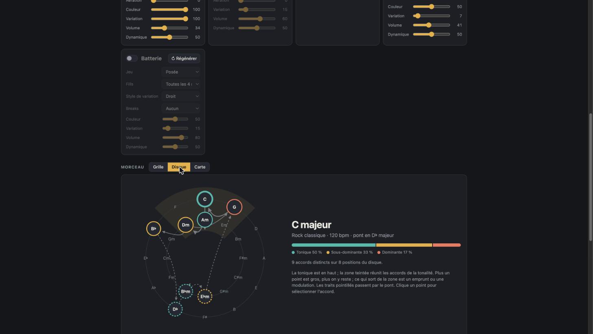
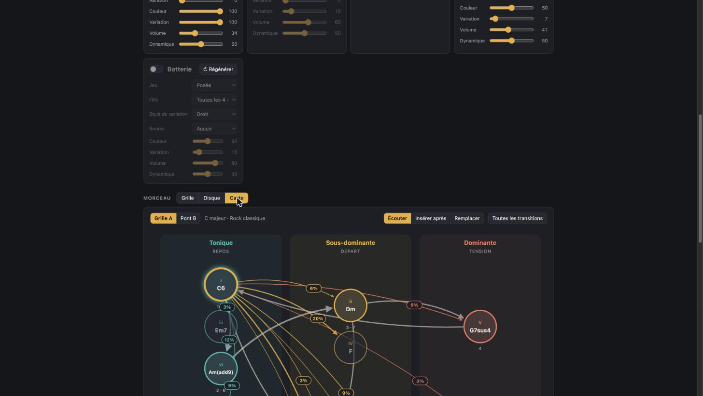
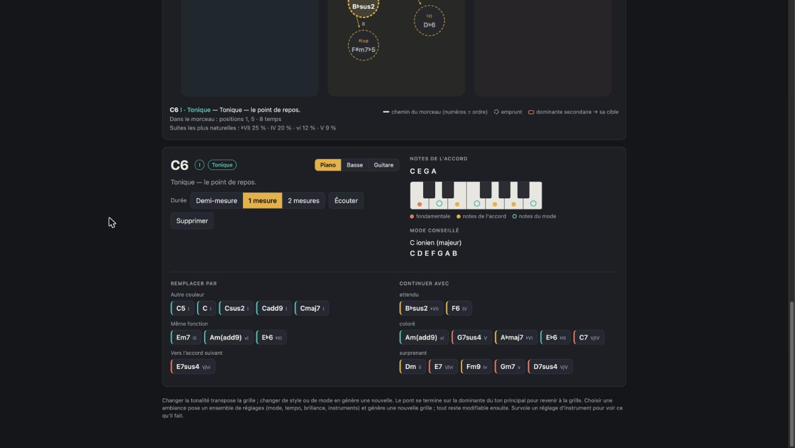
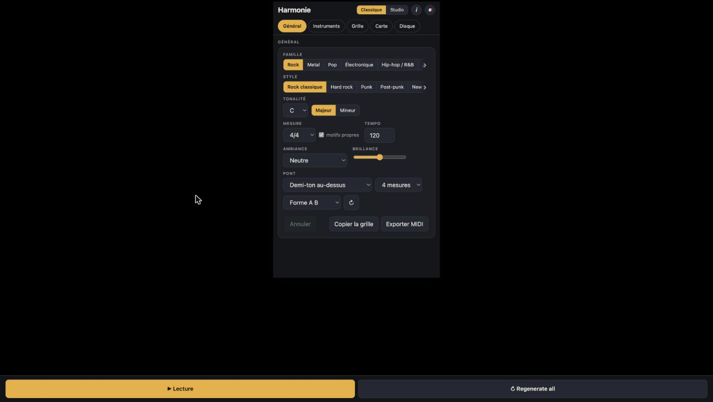
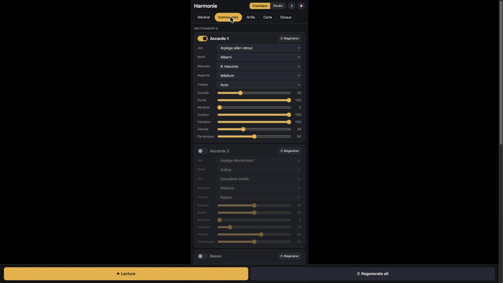
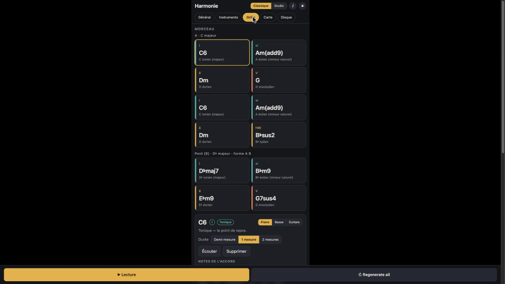

Harmonie
Générateur local de suites d'accords et de modes. L'application tourne entièrement dans le navigateur : pas de serveur, pas de compte, pas de dépendance réseau. Tout s'enregistre dans localStorage.
Aperçu de l'interface
Au premier chargement, l'application ouvre une grille complète : Rock classique en Do majeur, mesure 4/4, ambiance Neutre. L'en-tête porte le titre, la bascule d'habillage Classique / Studio, un bouton d'aide et le sélecteur de langue (10 langues).

Panneau Général
Réglages qui concernent le morceau entier. Changer certains réglages régénère la grille (famille, style, mode, mesure, ambiance) ; d'autres se contentent de transposer ou d'appliquer en direct (tonalité, tempo, brillance).
| Réglage | Valeurs | Effet |
|---|---|---|
| Famille | 9 boutons : Rock, Metal, Pop, Électronique, Hip-hop / R&B, Jazz / Blues, Musiques du monde, Folk / Country, Classique / Orchestral | Passe au premier style de la famille et génère une nouvelle grille. |
| Style | jusqu'à ~15 styles par famille (111 au total) | Nouvelle grille, pose la mesure et le tempo naturels du style. |
| Tonalité | 12 toniques | Transpose la grille sans la régénérer. |
| Mode | Majeur / Mineur | Nouvelle grille, tonique inchangée. |
| Mesure | 3/4, 4/4, 5/8, 6/8, 7/8, 8/8, 9/12, 10/12, 11/12, 12/12 | Nouvelle grille. Case motifs propres : motifs écrits pour la mesure (3/4 « Valse »). |
| Tempo | 50 à 220 bpm | Hors plage → ramené, vide → 120. |
| Ambiance | liste groupée (Neutre, Lumineuses, Paisibles, Tendres, Tristes, Sombres, Intenses) | Pose des réglages visibles sur les instruments, oriente l'harmonie et génère une nouvelle grille. |
| Brillance | curseur 0 à 100 | Filtre passe-bas de tous les timbres (sauf basse). Appliqué en direct. |
Pont
Un pont est une section contrastante tirée dans une tonalité voisine. Ses derniers accords reviennent sur la dominante du ton principal pour ramener à la grille.
| Réglage | Valeurs |
|---|---|
| Type de pont | Aucun, Demi-ton au-dessus, Un ton au-dessus, Tierce mineure au-dessus, Relatif majeur/mineur, Homonyme majeur/mineur, Ton de la sous-dominante, Ton de la dominante |
| Longueur | 4 ou 8 mesures |
| Forme | Forme A B · Forme A A B A |
| ↻ | Tire un autre pont sans toucher à la grille |
Barre d'actions (transport)
- ▶ Lecture / ■ Stop — démarre ou arrête la lecture en boucle. Raccourci :
Espace. - ↻ Tout régénérer — nouvelle grille, nouveau pont, nouvelles graines pour tous les instruments.
- Annuler — remonte dans une pile de 60 états (bouton ou
⌘Z/Ctrl+Z). - Copier la grille — met la grille dans le presse-papier au format texte.
- Exporter MIDI — télécharge un fichier
.midqui correspond note pour note à ce qu'on entend.
Accords 1
Instrument d'accord principal. Panneau actif par défaut.

| Réglage | Valeurs | Effet |
|---|---|---|
| Interrupteur · ↻ Régénérer | — | Coupe / active la partie ; régénère la grille (et le pont) pour Accords 1. |
| Jeu | Motif du style · Plaqués · Arpège montant · descendant · aller-retour · aléatoire | Façon de jouer l'accord. |
| Motif (nouveau) | Régulier · Lent · Gallop · Charleston · Tresillo · Alberti | Motif rythmique de l'arpège. Visible seulement quand le jeu est un arpège (montant, descendant, aller-retour, aléatoire). |
| Mesures | 4, 8, 12, 16 | Longueur de la grille (régénère). |
| Registre | Grave · Médium · Aigu | Décale de 7 demi-tons par cran. |
| Timbre | Auto, keys, guitar, pad, dist, lead, synth, strings, pluck, organ, brass | « Auto » = timbre du style. L'export MIDI écrit le timbre réellement joué. |
| Densité | curseur 0 à 100 | Pour le Motif du style : densité de l'accompagnement. Pour un arpège : troue l'arpège (en dessous de 0,5 il laisse des silences). |
| Durée | curseur 0 à 100 | 0 = staccato, 100 = tenu (échelle ×0,3 à ×1,7). |
| Aération | curseur 0 à 100 | Enlève des notes du voicing en gardant la tête. |
| Couleur | curseur 0 à 100 | Richesse des accords (emprunts, enrichissements, qualités). S'applique à la prochaine grille. |
| Variation · Volume · Dynamique | curseurs 0 à 100 | Communs à tous les instruments. |
Accords 2
Deuxième instrument d'accord, désactivé par défaut. Partage tous les réglages d'Accords 1 et ajoute un sélecteur Timbre indépendant (dont brass) et un sélecteur Où. La basse du motif style reste émise par Accords 1 : pas de double ligne de basse.
Note : la chaîne d'effets audio (saturation, trémolo, fuzz) qui existait auparavant sur Accords 2 a été retirée (pas assez réaliste).
| Réglage | Valeurs | Effet |
|---|---|---|
| Où (nouveau, remplace « Mesures ») | Partout · Mesures impaires · Mesures paires · Première moitié · Deuxième moitié | Mesures du cycle où Accords 2 joue (le reste est muet). Première / Deuxième moitié ne comptent que les mesures de la section A et ignorent le pont. |
| Motif | mêmes 6 valeurs qu'Accords 1 | Visible seulement en mode arpège. |
| Timbre | Auto · keys · guitar · pad · dist · lead · synth · strings · pluck · organ · brass | Timbre propre à Accords 2. |
| Autres réglages identiques à Accords 1 (jeu, registre, densité, durée, aération, variation, volume, dynamique). Bus audio et dynamique indépendants. | ||
Basse
Jeu (quelles notes) et rythme (quand) sont deux réglages distincts.
| Jeu | Motif du style · Fondamentale · Fondamentale et quinte · Fondamentale et octave · Arpège · Walking bass · Pédale · Riff · Ligne chantante · Aléatoire |
|---|---|
| Rythme | Selon le jeu · Rondes · Blanches · Noires · Croches · Triolets · Doubles croches · Syncopé (3+3+2) · Pompe (temps 1 et 3) · Anticipé · Avec notes fantômes · Calé sur la grosse caisse |
| Mesures | Toute la grille · 1 · 2 · 4 · 8 (le motif se répète sur les accords suivants) |
| Durées variables | Raccourcit certaines notes au hasard |
| Couleur · Variation · Volume · Dynamique | Comme pour les autres parties |
Mélodie
Partie désactivée par défaut.
| Jeu | Notes longues · Durées mêlées · Notes vives |
|---|---|
| Mesures | Toute la grille · motif de 1, 2, 4 ou 8 mesures |
| Octave | Très grave (−2) à Très aigu (+2) — 12 demi-tons par cran |
| Contour | Libre · Montant · Descendant |
| Où jouer | Tous les accords · Accords impairs · Accords pairs · Sur la tonique seulement |
| Refrain | Aucun · toutes les 2, 4 ou 8 mesures (alterne couplet et refrain) |
| Respiration · Glissando · Couleur · Variation · Volume · Dynamique | Curseurs 0 à 100 |
Batterie
| Jeu | Feutrée · Posée · Énergique |
|---|---|
| Fills | 1, 2, 4, 8 ou 16 mesures (1 mesure = pas de fill) |
| Style de variation | Droit · Notes fantômes · Syncopes · Laidback · Dense |
| Breaks | Aucun · toutes les 4, 8 ou 16 mesures (batterie et basse muettes sur le dernier temps de la mesure de break) |
| Couleur · Variation · Volume · Dynamique | Curseurs 0 à 100 |
Morceau — Grille, Disque, Carte
Trois vues du même morceau, choisies par le bouton segmenté Grille · Disque · Carte. La vue choisie est mémorisée.
Grille
Disque

Carte

Détail d'un accord
Un clic sur une carte sélectionne l'accord et affiche son panneau de détail. Les flèches ← et → passent à l'accord précédent ou suivant.

Boutons disponibles :
- Durée : Demi-mesure (ou « Début de mesure » quand la mesure ne se coupe pas en deux moitiés égales), 1 mesure, 2 mesures.
- Écouter : joue l'accord isolé.
- Supprimer : retire l'accord (désactivé quand la grille ne compte qu'un accord).
Version mobile
Sous 760 pixels de large, l'interface passe en cinq onglets en haut (Général, Instruments, Grille, Carte, Disque) et une barre d'actions fixe en bas (Lecture + Tout régénérer). Les bandes Famille / Style défilent horizontalement, les panneaux d'instrument s'empilent en une colonne.


